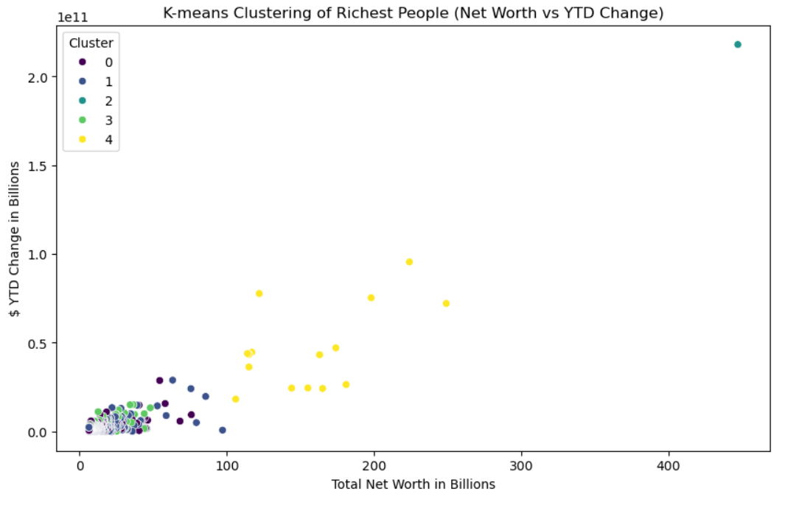
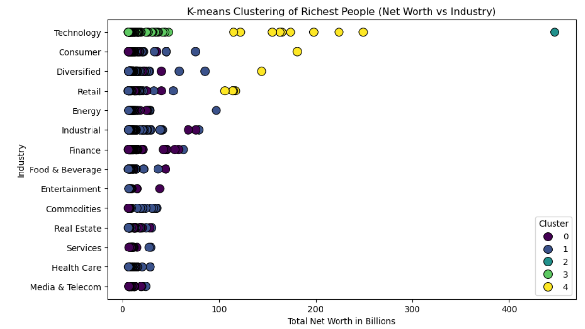
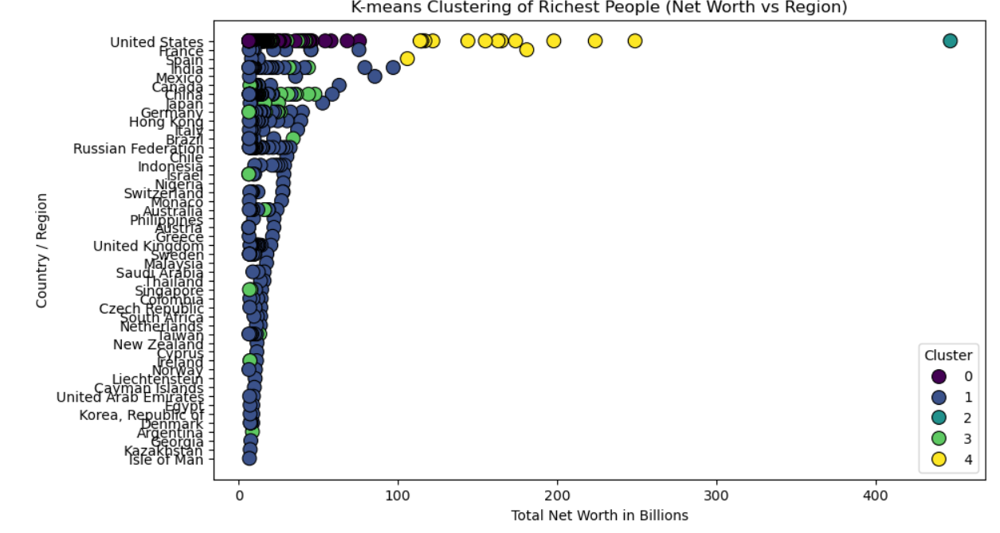
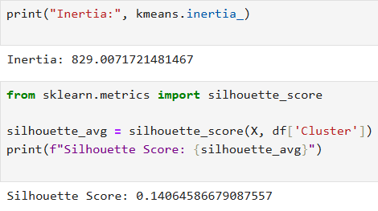

I will be analyzing the list of the 500 richest people in the world by grouping them by similar characteristics. I will use clustering algorithms to identify patterns among the list of billionaires. This will draw insights into trends and changes within the list. It could reveal the best industries and locations to be in financially.
Clustering is a form of unsupervised learning that aims to group data points based on common characteristics.
Data Set: https://www.kaggle.com/datasets/mahmoudredagamail/the-worlds-500-most-powerful-businessmen
The dataset I am using for Project 4 consists of 500 rows and 7 features. The features include rank 1-500, name, net worth, last change, YTD change, country, and industry. The data is taken from the Bloomberg Billionaires Index which is a daily ranking of the richest people in the world. It is updated at trading close every day.
This data was free from nulls and duplicates. However, I had to convert all of the dollar amounts to numeric form removing $ and B, M, k. The data also had excess spaces throughout which I trimmed down. I then hot encoded features like country/region and industry to make them more easily classifiable.
I used K-means clustering to cluster my data and plot the data in 3 different ways. I plotted Net Worth vs YTD Change, Net Worth vs Industry, and Net Worth vs Region.
  I evaluated my models through inertia and silhouette scores. The scores reflected bad modeling but I believe I used the right amount of clusters and my graphs do show useful data. I believe the high inertia which shows that the clusters are not tight is due to the nature of that data, where a few people have a lot more money than the rest of the billionaires on the list.
The Net Worth vs YTD Change graph shows that the top 10 richest people in the world have an unproportianately large sum of the total money in the world and are growing the fastest.
The Net Worth vs Industry graph shows that technology has the most billionaires and also the highest net worth. Most of the outlier net worths are in technology. However, it also shows that all of the industries included in the list have made billionaires with all having at least 5 billionaires. The Industries with the highest net worth billionaires(yellow cluster) are technology, consumer, diversified, and retail.
The Net Worth vs Region graph shows that the country that by far produces the most of these billionaires is the US. The US also has almost all of the highest net-worth billionaires(yellow cluster). However many countries/regions have billionaires even some places I have never heard of.
The impact of this clustering is very high on the human race. A small group of people are gathering wealth very quickly and the richest people are able to gain wealth the quickest. This leads to major inequalities. While I am not an economist, and there are many different outlooks on capitalism, I think this problem will only continue to grow, especially with technology. I hope that this project and ones similar to it can strike up conversations about how to make sure wealth is evenly distributed across the world.
https://www.geeksforgeeks.org/random-forest-classifier-using-scikit-learn/